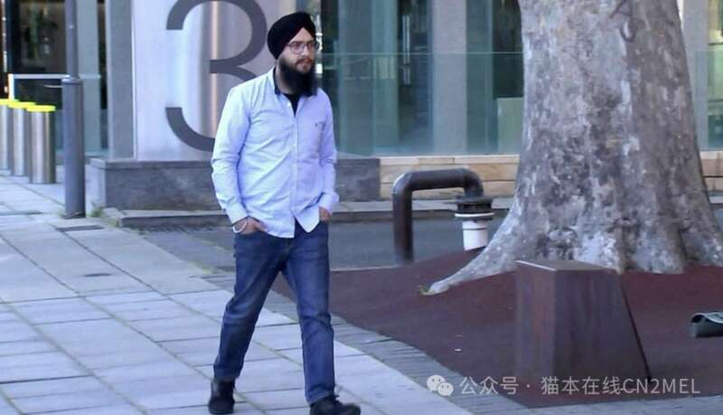
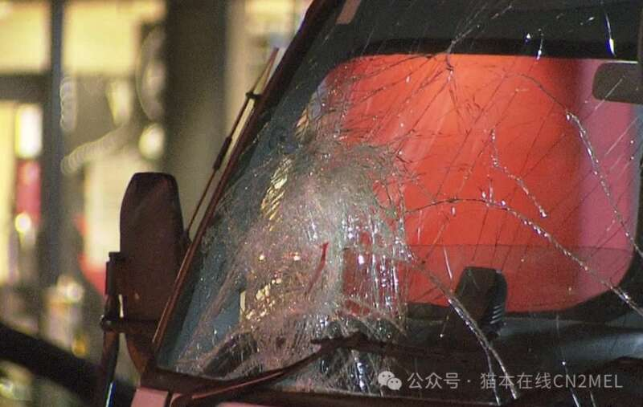
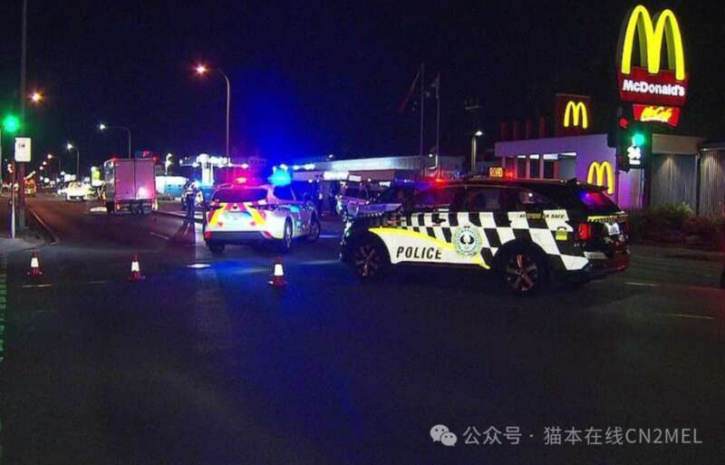

据ABC消息，去年2月，阿德莱德街头发生一起车祸，导致1名来澳探亲的中国男子不幸去世。肇事司机则坚称“失忆”，最终躲过牢狱之灾。
去年2月5日，64岁的中国男子Nengguang Wen在Edwardstown区South Rd遭遇车祸，不幸死亡。
事发时，Nengguang Wen正走在斑马线上，肇事司机Jagmeet Singh则驾驶着一辆卡车将其撞倒在地。
报道称，Nengguang Wen是看到信号灯允许的情况下才过马路的。但走上斑马线仅4秒，便被Singh卡车撞上。
地方法院法官Ian Press表示，Singh在红灯亮起7秒后，仍然没有停下车辆，而是继续驾车穿过斑马线。
“当你接近South Rd与Furness Av交界处时，信号灯变成了红色，但你并没有减速或停下，而是以大约56km/h的速度驶过了那个路口，”

Jagmeet Singh
据悉，Nengguang Wen是从中国来阿德莱德度假，并探望自己的女儿和孙子孙女。
Nengguang Wen的女儿Nilla Wen表示，他们的家庭并不怨恨Singh，但将继续倡导道路安全。
“无论法院的判决结果如何，我们的家庭已经决定不对任何人，包括Singh在内，怀有怨恨。”
“我们将继续倡导道路安全，尤其是针对重型车辆驾驶员，我们不希望再有其他家庭经历这样的痛苦。”

法官指出，Singh声称自己并不记得这起车祸，并且前一个月因为脑部受伤曾经历短暂的失忆。
尽管身体状况可能对此案造成了议定影响，但Singh仍有责任评估自己是否适合驾驶。
“你在没有确认自己健康状况的情况下决定开车，这表明你将自己的便利置于其他道路使用者的安全之上，”法官说道。
法官Press表示，这次事故给Nengguang Wen的家庭带来了“巨大的伤痛”。

“无法充分总结或描述每个家庭成员所受到的痛苦和损失，他们在此情况下失去了一个丈夫、父亲、祖父和朋友，遭受的悲痛是难以想象的。”
“他们的愤怒和悲伤是完全可以理解的，你的行为彻底地改变了他们的生活轨迹，也改变了Nengguang Wen孙子孙女的生活。”
法官表示，没有证据表明Singh超速驾驶，也没有证据显示他在驾驶时使用手机或体内含有酒精和毒品。
最终，Singh被判三年零四个月的居家监禁，两年零八个月内不得申请假释。
Singh被释放后将被吊销驾照十年。